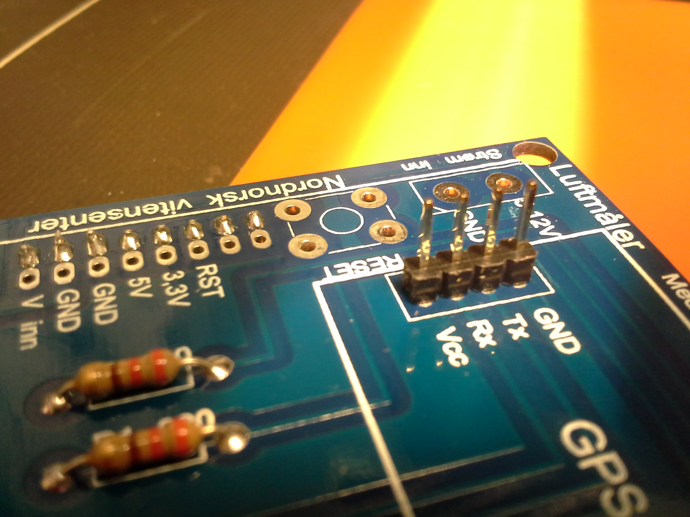
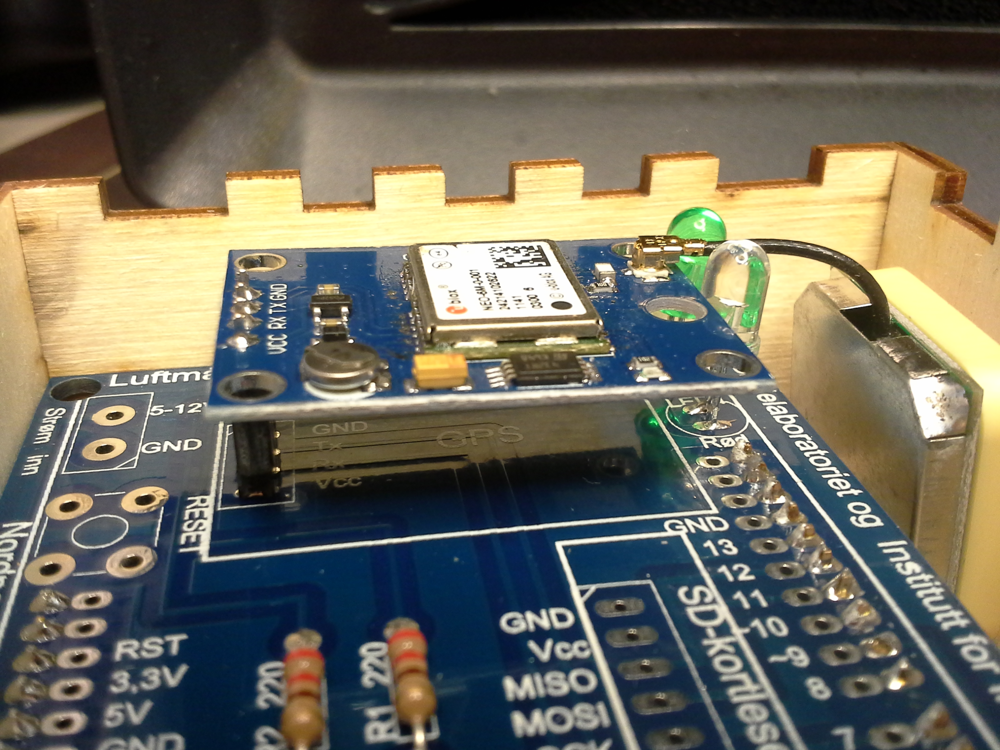

Lodde sensorene
På selve header shieldet finner vi bare LED lysene og motstanderene de trenger
for å ikke brenne opp. Desverre er veldig lite spennende vi kan gjøre med
Arduino'en uten sensorer. Så nå må vi lodde fast pinner i de tilsvarende hullene
på shieldet.
Dette trenger du
- Header shield
- Hvit/Blå ledning med fire ledere til støvmåleren
- Temperatursensoren ("Sukkerbiten")
- GPS modulen
- SD-kortleseren
- ZipLock-posen med smådeler
Lodde pinner på shieldet
Ta frem radene med male header pinner som du allerede bruket når du loddet fast
pinnene som plugges i Arduinoen. Klipp av rett antall pinner og plassér dem i
shieldet på merkeringene for Støvmåler, Temp/Fukt, GPS og SD-kortleser.
I alle tilfeller skal den korte delen av pinnen stikkes ned i shieldet og den
lange delen av pinnen skal stikke opp.
Du lodder fast pinnene ved å snu shieldet oppned, og lodder fast de korte
endestykkene som stikker ut på undersiden av shieldet. Gjenta denne prosessen
for alle fire delene.

Header pinner for støvmåleren.

Header pinner for temperatursensoren

Header pinner for GPS

Header pinner for microSD kortleseren
Lodde plugger i sensorene
Støvmåleren og Temperatursensoren kommer allerede med sine egne ledninger, og
er derfor nå allerede klar til bruk. Men om du ser på GPS modulen og microSD
kortleseren, så ser du at det bare er masse hull på chipene der dem skal kobles
til shieldet. Vi må altså lodde fast plugger på disse, slik at vi kan plugge dem
i shieldet.
Ta frem raden med female header plugger (se bildet nedenfor). Klipp til rett
antall plugger for GPS'en og en gang til kortleseren. Stikk så pluggene inn
gjennom hullene på chipen slik at pluggene stikker ut på undersiden. Du vil da
kunne lodde fast endestykkene på oversiden av chipene.


Plugger på undersiden av microSD kortleseren

Plugger på undersiden av GPS modulen
Ferdig
Når alle pinner og plugger er plassert og loddet fast kan du plugge i de
forskjellige delene i shieldet.

Ledningen til Støvmåleren

Plugge inn temperatursensoren

Plugge inn GPS modulen
Gå videre
↑ Gå til innholdsfortegnelsen
← Gå tilbake til forrige steg: Lodde header shieldet
→ Gå til neste steg: Skru fast delene i boksen